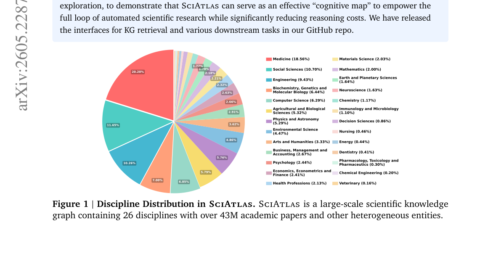
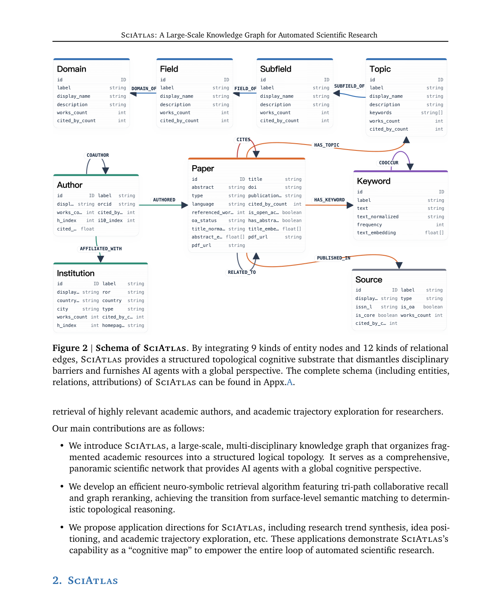

요즘 AI로 논문 검색하다 보면 비슷한 좌절을 만남. Semantic Scholar, Google Scholar 같은 도구는 키워드나 벡터 유사도로 논문을 찾아줌. 비슷한 논문은 잘 찾는데, “이 연구가 어디서 왔고 어디로 가는지”는 못 봄. 인용망, 개념의 진화, 학제간 연결 같은 구조적 관계가 빠져 있음.

-
Deep Research 에이전트들(OpenScholar, AlphaXiv 같은)이 이걸 보완하려고 반복 검색을 돌리는데, LLM을 여러 번 호출하니 비싸고 느리고, 확실한 “인지 지도”가 없으니 복잡한 탐색 경로에서 논리적 환각(hallucination)에 빠지기도 함.
-
절강대 ZJUNLP 연구진이 이 문제를 근본적으로 접근함. SciAtlas — 논문 4,330만 편, 저자 1억 970만 명, 키워드 376만 개, 기관 12만 개를 30억 개의 관계 엣지로 엮은 대규모 학술 지식그래프를 만듦.
-
단순히 논문을 모아놓은 게 아님. 9종류의 개체 노드(Paper, Author, Institution, Keyword, Source, Topic, Field, Subfield, Domain)와 12종류의 관계 엣지(CITES, AUTHORED, COAUTHOR, HAS_KEYWORD, COOCCUR 등)로 구성된 스키마를 설계함.

- 논문이 네 가지 층위로 엮임. 의미 층(인용·관련성), 개념 층(키워드 공동출현), 방향 층(Domain > Field > Subfield > Topic 계층), 사회 층(공동저자·소속기관). 이 네 층이 겹치면서 학제간 연결이 자동으로 드러남.
데이터는 어디서 오는가
-
데이터 소스는 OpenAlex. 4억 8,000만 편의 학술 출판물을 담은 완전 오픈소스 라이브러리. 각 논문에 저자, 초록, 기관, 출판일, 인용 수, 주제, PDF URL 같은 메타데이터가 포함돼 있음.
-
그대로 쓰진 않음. 정규화, 중복 제거, 비영어 논문 필터링, 초록이 너무 짧은 논문 제거를 거침. 저자는 동명이인 문제 때문에 중복 제거를 하지 않는 게 흥미로움.
-
핵심 공정 하나가 키워드 추출. OpenAlex 자체 Concept 엔티티가 6만 5천 개뿐이라 너무 희소하고 “artificial intelligence” 같은 거시적 수준에 머물러 있음. 그래서 Qwen3-30B-A3B-Instruct-2507을 써서 초록에서 논문별로 3~8개 핵심 키워드를 직접 뽑음.
-
프롬프트 설계가 재밌음. “논문 고유의 용어나 시스템 이름은 피하고, 여러 논문에 재사용 가능한 기본적인 표현을 우선하라”고 지시함. “protein structure prediction”은 좋은 키워드, “hierarchical dual-path adaptive learning framework”는 나쁜 키워드라고 명시적으로 예시를 줌. 요즘 논문들이 과장된 서술(packaging)으로 본질을 가린다는 걸 인지하고 있다는 뜻.
-
임베딩은 bge-large-en-v1.5로 논문 제목, 초록, 키워드 세 필드에 대해 미리 계산해둠. 검색 시점이 아니라 색인 시점에 계산해두는 접근. 최종적으로 Neo4j에 배포함.
Neuro-Symbolic 검색: 키워드 + 벡터 + 그래프
-
여기가 이 논문의 핵심임. 기존 검색이 키워드 매칭이나 벡터 유사도 하나로 끝나는 거라면, SciAtlas는 세 경로를 병렬로 돌려서 그래프 위에서 재랭킹함.
-
첫째 경로 — 키워드 매칭: LLM이 쿼리에서 키워드를 뽑고 중요도 점수를 매김. KG에서 정확 매칭과 벡터 매칭을 동시에 돌림. 유사도 임계값(0.7)을 넘는 상위 3개 노드까지 후보로 잡음. 여러 키워드가 같은 노드를 가리키면 최댓값을 취함.
-
둘째 경로 — 시맨틱 매칭: 쿼리를 임베딩해서 KG 내 논문 상위 60개를 검색. bge-reranker-large로 재랭킹해 상위 15개를 남김. 입력이 논문 전체면 초록만 뽑아서 임베딩.
-
셋째 경로 — 타이틀 매칭: GROBID로 쿼리에서 논문 제목을 추출하고 퍼지 매칭. 시퀀스 매칭(0.65) + 토큰 오버랩(0.35) 가중 합.
-
세 경로의 후보를 MinMax 정규화로 합친 뒤, 2-hop 서브그래프 전파를 돌림. 논문 중요도는 인용 수의 로그 스케일로 정의. 여기에 Random Walk with Restart(RWR)를 돌려서 토폴로지적 깊이 추론을 함.
-
최종 점수는 초기 관련성(35%), 그래프 토폴로지 지지(45%), 인용 중요도(20%)의 가중 선형 결합. 엣지 가중치도 세밀하게 설정돼 있음 — CITES가 1.00, RELATED_TO가 0.90, AUTHORED가 0.80, COAUTHOR와 COOCCUR이 각각 0.60.
-
핵심 차이는 LLM을 여러 번 호출하지 않는다는 것. 그래프 구조 자체가 인지 지도 역할을 해서, 확정적(deterministic)인 연관 관계 발견이 가능함. Deep Research 에이전트처럼 반복적으로 LLM을 호출하면서 환각에 빠지는 문제를 회피하는 구조.
활용 시나리오 6가지
-
문헌 리뷰: 학회·저자·기관별 권위도를 기준으로 맞춤형 검색. 단순 키워드가 아니라 그래프 구조를 활용해 관련 논문 네트워크를 탐색.
-
아이디어 포지셔닝: 새로운 연구 아이디어를 입력하면, 기존 연구와의 유사성·차이점을 자동으로 분석. 선행 연구와의 차별성을 객관적으로 평가할 수 있음.
-
아이디어 생성: 서로 다른 도메인의 개념을 그래프 위에서 연결해 새로운 연구 방향을 제안. 학제간 융합 연구를 찾을 때 특히 유용.
-
연구 트렌드 예측: 시간에 따른 발전 궤적을 KG 위에서 요약. 어느 분야가 어디로 가는지 구조적으로 파악.
-
관련 저자 검색: 인용 수와 저자 순서를 기준으로 쿼리와 관련성이 높은 연구자를 랭킹. 협업자를 찾을 때 유용.
-
연구자 프로파일링: 한 연구자의 논문을 클러스터링해서 통합 프로필을 생성. 단순히 논문 리스트가 아니라 연구 궤적을 보여줌.
한계와 방향
-
아직 Neo4j 인터페이스가 주라서 CLI 도구와 에이전트 스킬을 추가할 계획임. 원자적 지식, 정리, 코드, 데이터셋까지 KG에 통합하겠다는 로드맵도 제시.
-
업데이트 방식은 두 가지. OpenAlex API로 실시간 추가, 또는 2개월 단위 changefile로 주기적 갱신. GROBID로 PDF에서 메타데이터를 뽑는 대안도 제공함.
-
벤치마크와 평가가 아직 부족함. 에이전트 과학자(agent scientist)를 정량 평가할 전용 벤치마크를 만들겠다고 함.
왜 중요한가
-
요즘 “AI로 과학 연구 자동화”가 유행어가 됐는데, 대부분 LLM에 검색 결과를 여러 번 먹이면서 추론을 돌리는 구조임. 비싸고, 느리고, 환각에 취약함. SciAtlas는 다른 접근을 함 — 검색 대상 자체를 구조화된 그래프로 만들어서, LLM 없이도 확정적 연관 관계를 찾을 수 있게 만듦.
-
물론 4,300만 편 논문을 Neo4j에 올리는 건 가볍지 않은 인프라 작업임. 개인 연구자가 로컬에서 돌리기엔 무거움. 하지만 그래프 기반 학술 검색이 어느 방향으로 가야 하는지를 명확하게 보여주는 설계라 평가할 수 있음.
-
GitNexus가 코드베이스를 지식그래프로 만들어 코딩 에이전트에 먹이는 거라면, SciAtlas는 논문 전체를 지식그래프로 만들어 연구 에이전트에 먹이는 거임. 같은 방향의 다른 적용. 그래프 구조 자체가 “인지 지도”가 되어 준다는 관점이 두 프로젝트의 공통된 통찰.
참고자료